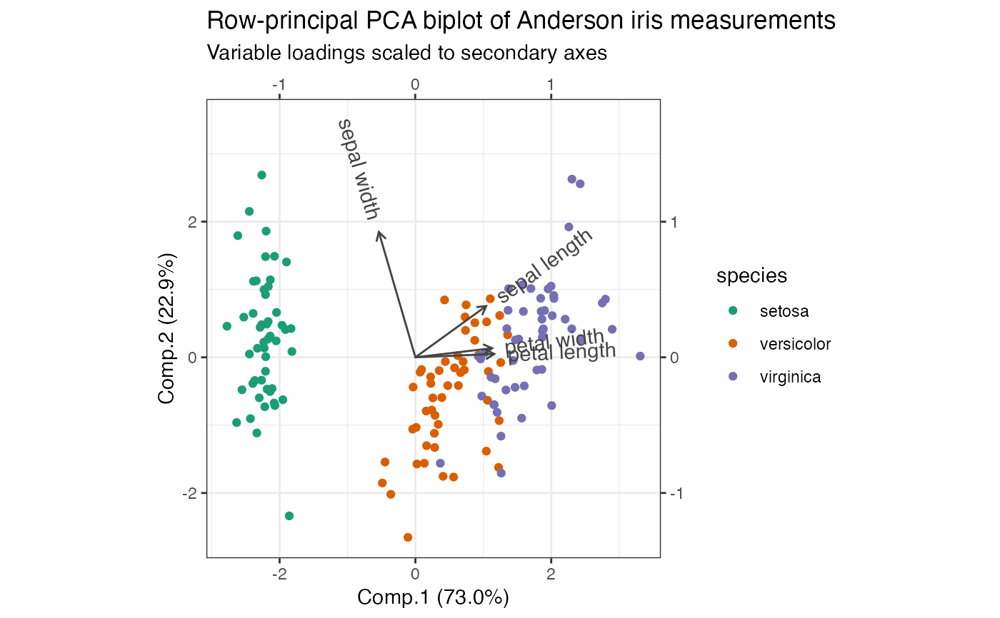
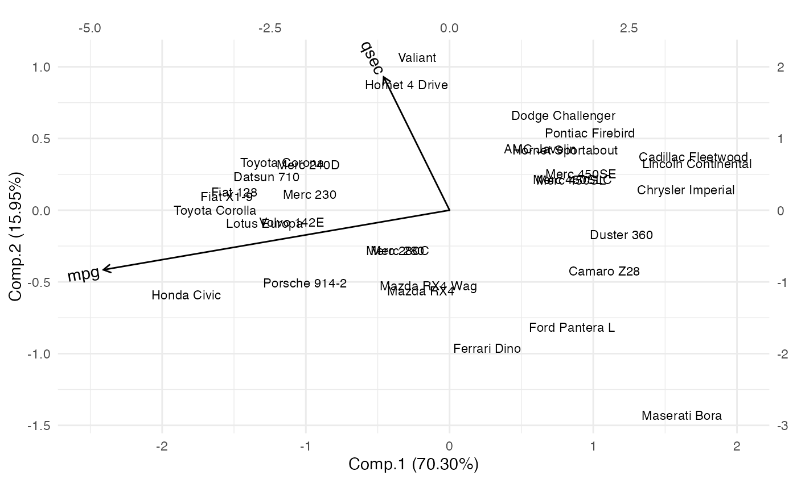
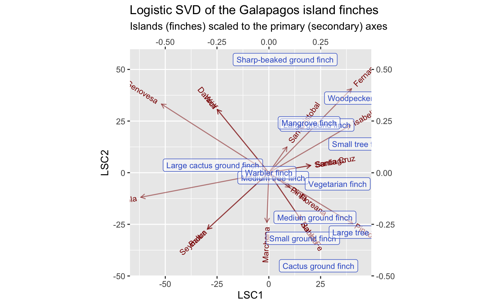

ggbiplot.RdBuild a biplot visualization from ordination data wrapped as a tbl_ord object.
ggbiplot( ordination = NULL, mapping = aes(x = 1, y = 2), prediction = FALSE, xlim = NULL, ylim = NULL, expand = TRUE, clip = "on", axis.percents = TRUE, sec.axes = NULL, scale.factor = NULL, scale_rows = NULL, scale_cols = NULL, ... ) ord_aes(ordination, ...)
| ordination | A tbl_ord. |
|---|---|
| mapping | List of default aesthetic mappings to use for the biplot. The
default assigns the first two coordinates to the aesthetics |
| prediction | Logical; whether to build a prediction biplot rather than
an interpolation biplot (the default). |
| xlim | Limits for the x and y axes. |
| ylim | Limits for the x and y axes. |
| expand | If |
| clip | Should drawing be clipped to the extent of the plot panel? A
setting of |
| axis.percents | Whether to concatenate default axis labels with inertia percentages. |
| sec.axes | Matrix factor character to specify a secondary set of axes. |
| scale.factor | Numeric value used to scale the secondary axes against
the primary axes; ignored if |
| scale_rows, scale_cols | Either the character name of a numeric variable
in |
| ... | Additional arguments passed to |
ggbiplot() produces a ggplot object from a tbl_ord
object ordination. The baseline object is the default unadorned
"ggplot"-class object p with the following differences from what
ggplot2::ggplot() returns:
p$mapping is augmented with .matrix = .matrix, which expects either
.matrix = "rows" or .matrix = "cols" from the biplot.
p$coordinates is defaulted to ggplot2::coord_equal() in order to
faithfully render the geometry of an ordination. The optional parameters
xlim, ylim, expand, and clip are passed to coord_equal() and
default to its ggplot2 defaults.
When x or y are mapped to coordinates of ordination, and if
axis.percents is TRUE, p$labels$x or p$labels$y are defaulted to the
coordinate names concatenated with the percentages of inertia
captured by the coordinates.
p is assigned the class "ggbiplot" in addition to "ggplot". This
serves no functional purpose currently.
Furthermore, the user may feed single integer values to the x and y
aesthetics, which will be interpreted as the corresponding coordinates in the
ordination.
ord_aes() is a convenience function that generates a full-rank set of
coordinate aesthetics ..coord1, ..coord2, etc. mapped to the
shared coordinates of the ordination object, along with any additional
aesthetics that are processed internally by ggplot2::aes().
ggbiplot() uses ggplot2::fortify() internally to produce a single data
frame with a .matrix column distinguishing the subjects ("rows") and
variables ("cols"). The stat layers stat_rows() and stat_cols() simply
filter the data frame to one of these two.
The geom layers geom_rows_*() and geom_cols_*() call the corresponding
stat in order to render plot elements for the corresponding factor matrix.
geom_dims_*() selects a default matrix based on common practice, e.g.
points for rows and arrows for columns.
ggplot2::ggplot2(), on which ggbiplot() is built.
# compute PCA of Anderson iris measurements iris[, -5] %>% princomp(cor = TRUE) %>% as_tbl_ord() %>% confer_inertia(1) %>% mutate_rows(species = iris$Species) %>% mutate_cols(measure = gsub("\\.", " ", tolower(names(iris)[-5]))) %>% print() -> iris_pca#> # A tbl_ord of class 'princomp': (150 x 4) x (4 x 4)' #> # 4 coordinates: Comp.1, Comp.2, ..., Comp.4 #> # #> # Rows (principal): [ 150 x 4 | 1 ] #> Comp.1 Comp.2 Comp.3 ... | species #> | <fct> #> 1 -2.26 0.480 0.128 | 1 setosa #> 2 -2.08 -0.674 0.235 ... | 2 setosa #> 3 -2.36 -0.342 -0.0442 | 3 setosa #> 4 -2.30 -0.597 -0.0913 | 4 setosa #> 5 -2.39 0.647 -0.0157 | 5 setosa #> # … with 145 more rows #> # #> # Columns (standard): [ 4 x 4 | 1 ] #> Comp.1 Comp.2 Comp.3 ... | measure #> | <chr> #> 1 0.521 0.377 0.720 | 1 sepal length #> 2 -0.269 0.923 -0.244 ... | 2 sepal width #> 3 0.580 0.0245 -0.142 | 3 petal length #> 4 0.565 0.0669 -0.634 | 4 petal width# row-principal biplot with rescaled secondary axis iris_pca %>% ggbiplot(aes(color = species), sec.axes = "cols", scale.factor = 2) + theme_bw() + scale_color_brewer(type = "qual", palette = 2) + geom_rows_point() + geom_cols_vector(color = "#444444") + geom_cols_text_radiate(aes(label = measure), color = "#444444") + ggtitle( "Row-principal PCA biplot of Anderson iris measurements", "Variable loadings scaled to secondary axes" ) + expand_limits(y = c(-1, 3.5))# Performance measures can be regressed on the artificial coordinates of # ordinated vehicle specs. Because the ordination of specs ignores performance, # these coordinates will probably not be highly predictive. The gradient of each # performance measure along the artificial axes is visualized by projecting the # regression coefficients onto the ordination biplot. # scaled principal components analysis of vehicle specs mtcars_specs_pca <- ordinate( mtcars, cols = c(cyl, disp, hp, drat, wt, vs, carb), model = ~ princomp(., cor = TRUE) ) # data frame of vehicle performance measures mtcars %>% subset(select = c(mpg, qsec)) %>% as.matrix() %>% print() -> mtcars_perf#> mpg qsec #> Mazda RX4 21.0 16.46 #> Mazda RX4 Wag 21.0 17.02 #> Datsun 710 22.8 18.61 #> Hornet 4 Drive 21.4 19.44 #> Hornet Sportabout 18.7 17.02 #> Valiant 18.1 20.22 #> Duster 360 14.3 15.84 #> Merc 240D 24.4 20.00 #> Merc 230 22.8 22.90 #> Merc 280 19.2 18.30 #> Merc 280C 17.8 18.90 #> Merc 450SE 16.4 17.40 #> Merc 450SL 17.3 17.60 #> Merc 450SLC 15.2 18.00 #> Cadillac Fleetwood 10.4 17.98 #> Lincoln Continental 10.4 17.82 #> Chrysler Imperial 14.7 17.42 #> Fiat 128 32.4 19.47 #> Honda Civic 30.4 18.52 #> Toyota Corolla 33.9 19.90 #> Toyota Corona 21.5 20.01 #> Dodge Challenger 15.5 16.87 #> AMC Javelin 15.2 17.30 #> Camaro Z28 13.3 15.41 #> Pontiac Firebird 19.2 17.05 #> Fiat X1-9 27.3 18.90 #> Porsche 914-2 26.0 16.70 #> Lotus Europa 30.4 16.90 #> Ford Pantera L 15.8 14.50 #> Ferrari Dino 19.7 15.50 #> Maserati Bora 15.0 14.60 #> Volvo 142E 21.4 18.60# regress performance measures on principal components lm(mtcars_perf ~ get_rows(mtcars_specs_pca)) %>% as_tbl_ord() %>% augment_ord() %>% print() -> mtcars_pca_lm#> # A tbl_ord of class 'mlm': (32 x 8) x (2 x 8)' #> # 8 coordinates: (Intercept), Comp.1, ..., Comp.7 #> # #> # Rows: [ 32 x 8 | 1 ] #> `(Intercept)` Comp.1 Comp.2 ... | .name #> | <chr> #> 1 1 -0.398 -1.12 | 1 Mazda RX4 #> 2 1 -0.294 -1.06 ... | 2 Mazda RX4 Wag #> 3 1 -2.54 0.465 | 3 Datsun 710 #> 4 1 -0.601 1.75 | 4 Hornet 4 Drive #> 5 1 1.61 0.837 | 5 Hornet Sportabout #> # … with 27 more rows #> # #> # Columns: [ 2 x 8 | 1 ] #> `(Intercept)` Comp.1 Comp.2 ... | .name #> | <chr> #> 1 20.1 -2.41 -0.415 ... | 1 mpg #> 2 17.8 -0.459 0.929 | 2 qsec# regression biplot ggbiplot(mtcars_specs_pca, aes(label = .name), sec.axes = "rows", scale.factor = .5) + theme_minimal() + geom_rows_text(size = 3) + geom_cols_vector(data = mtcars_pca_lm) + geom_cols_text_radiate(data = mtcars_pca_lm) + expand_limits(x = c(-2.5, 2))# multidimensional scaling based on a scaled cosine distance of vehicle specs mtcars %>% subset(select = c(cyl, disp, hp, drat, wt, vs, carb)) %>% scale() %>% proxy::dist(method = "cosine") %>% cmdscale_ord() %>% as_tbl_ord() %>% augment_ord() %>% print() -> mtcars_specs_cmds#> # A tbl_ord of class 'cmds_ord': (32 x 2) x (32 x 2)' #> # 2 coordinates: PCo1 and PCo2 #> # #> # Rows (symmetric): [ 32 x 2 | 1 ] #> PCo1 PCo2 | .name #> | <chr> #> 1 -0.496 0.489 | 1 Mazda RX4 #> 2 -0.534 0.500 | 2 Mazda RX4 Wag #> 3 0.0720 -0.240 | 3 Datsun 710 #> 4 -0.650 -0.154 | 4 Hornet 4 Drive #> 5 0.189 0.192 | 5 Hornet Sportabout #> # … with 27 more rows #> # #> # Columns (symmetric): [ 32 x 2 | 1 ] #> PCo1 PCo2 | .name #> | <chr> #> 1 -0.496 0.489 | 1 Mazda RX4 #> 2 -0.534 0.500 | 2 Mazda RX4 Wag #> 3 0.0720 -0.240 | 3 Datsun 710 #> 4 -0.650 -0.154 | 4 Hornet 4 Drive #> 5 0.189 0.192 | 5 Hornet Sportabout #> # … with 27 more rows# regress performance measures on principal coordinates lm(mtcars_perf ~ get_rows(mtcars_specs_cmds)) %>% as_tbl_ord() %>% augment_ord() %>% print() -> mtcars_cmds_lm#> # A tbl_ord of class 'mlm': (32 x 3) x (2 x 3)' #> # 3 coordinates: (Intercept), PCo1, PCo2 #> # #> # Rows: [ 32 x 3 | 1 ] #> `(Intercept)` PCo1 PCo2 | .name #> | <chr> #> 1 1 -0.496 0.489 | 1 Mazda RX4 #> 2 1 -0.534 0.500 | 2 Mazda RX4 Wag #> 3 1 0.0720 -0.240 | 3 Datsun 710 #> 4 1 -0.650 -0.154 | 4 Hornet 4 Drive #> 5 1 0.189 0.192 | 5 Hornet Sportabout #> # … with 27 more rows #> # #> # Columns: [ 2 x 3 | 1 ] #> `(Intercept)` PCo1 PCo2 | .name #> | <chr> #> 1 20.1 -0.196 -1.79 | 1 mpg #> 2 17.8 1.07 -0.521 | 2 qsec# regression biplot ggbiplot(mtcars_specs_cmds, aes(label = .name), sec.axes = "rows", scale.factor = 3) + theme_minimal() + geom_rows_text(size = 3) + geom_cols_vector(data = mtcars_cmds_lm) + geom_cols_text_radiate(data = mtcars_cmds_lm) + expand_limits(x = c(-2.25, 1.25), y = c(-2, 1.5))